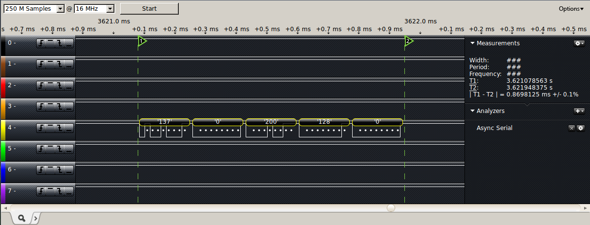

Project 2 has two main objectives. The first is to conduct measurements of the I/O latency and CPU utilization of the code used in project 1. The second is to, using this information, modify the sentry robot from project 1 to run on top of a provided real-time operating system (RTOS).
2.0 Hardware
Project 2 uses largely the same hardware as project 1. See the project 1 report for information on the sensors used or the iRobot Roomba.
A different board was used to run the RTOS in project 2, however. This is the Xplained board, which has an ATMEGA-1284P microcontroller.
Documentation for this board is available here. An image of the board is shown below.
MEGA-1284P Xplained Board
The Xplained board was connected to the sensors and Roomba as shown in the following diagram. The power supply is shown in more detail below.
Project 2 Block Diagram
As in project 1, a power supply was configured to regulate the 14.4V from the Roomba battery into a usable 5V. The design of the power supply is shown in the figure below.
5V Power Supply
3.0 I/O Latency and CPU Utilization
I/O latency of the sonar and PIR sensor were measured using project 1 code. Idle CPU time was also measured, and CPU utilization was estimated.
3.1 Sonar Pings
The sentry robot in project 1 used interrupts to deal with sonar readings, and kept the sonar in continuous ranging mode. This meant that the sentry robot never had to manually trigger sonar pings or actively wait for the results to come back. On a rising edge, the ISR prepares input capture and saves the timer value. On a falling edge, the ISR calculates the time difference and calls a callback with the distance in centimeters, then restarts the timer to prevent overflows. The timer prescaler was calculated based on the fact that the sonar takes up to 49ms between ranging measurements.
The ISR used is shown below, with timing code added. PB6 was measured by an attached logic analyzer to determine timings.
The logic analyzer was used to measure sonar timings when pings were returned and when pings were lost. The logic analyzer outputs are shown below, first for a returned ping. Each images shows the rising edge and falling edge interrupts with their execution times. The gap in the middle represents the time from the sonar rising edge to the falling edge, and its width is shown in the "Measurements" pane on the right side. For ping received (object in range of sonar), the gap width is 2.31ms; when the ping is lost (object out of range of sonar), the gap is approximately 37.5ms, which agrees with the sonar specification on ping timeouts.
Ping Received Measurements (gap width: 2.31ms)
Ping Lost Measurements (gap width: 37.51ms)
3.2 PIR Sensor Readings
Since the PIR sensor does not involve timing in its measurements, the sensor value can be obtained almost instantly by reading the appropriate input pin. The PIR sensor has a significant delay between measurement cycles, but obtaining the sensor value requires only one line of code, and the time taken is insignificant.
3.3 Idle CPU Time
The sentry robot in project 1 used interrupts to handle dealing with the sonar and PIR sensor, and so avoids busy-waiting for these sensor values. The sentry does use synchronous delays in two important areas, though: when turning and when getting Roomba sensor packets.
The turn90 function is listed below with debugging code using pin PB6. This function is used to turn the robot approximately 90 degrees, and so waits for a pre-calculated time for the robot to finish turning fully.
void turn90(bool right) {
PORTB |= _BV(PB6); // ****************** HIGH PB6
roomba_drive(200, right ? -1 : 1);
int i;
for (i = 0; i < 800; i++) {
// If PIR triggered, stop turning.
if (are_you_there) {
roomba_drive(0, RADIUS_STRAIGHT);
break;
}
_delay_ms(1);
}
PORTB &= ~_BV(PB6); // ****************** LOW PB6
}
The image below shows the logic analyzer capture of the turn90 function, which takes approximately 0.8s to execute.
turn90 Measurements (gap width: 0.8s)
The sentry also delays to wait for the Roomba to return sensor packet 1 inside the roomba_sense_1 function. This function is called every cycle of the main loop to check for virtual or physical walls.
// Blocking call
ROOMBA_PACKET_1 roomba_sense_1() {
PORTB |= _BV(PB6); // ***************** HIGH PB6
// Send request
uint8_t data[] = { (uint8_t) ROOMBA_SENSOR_PACKET_1 };
_roomba_send_command(OC_SENSORS, 1, data);
// Recieve into a buffer
int packet_size = sizeof(ROOMBA_PACKET_1);
uint8_t buffer[packet_size];
// Busy wait until entire packet is read
int i = 0;
while (i < packet_size) {
buffer[i++] = rxByteBlocking(UART_CHANNEL_3);
}
ROOMBA_PACKET_1 packet;
memcpy(&packet, buffer, packet_size);
PORTB &= ~ _BV(PB6); // ***************** LOW PB6
return packet;
}
The image below shows the logic analyzer capture of the roomba_sense_1 function, which takes approximately 15ms to execute.
roomba_sense_1 Measurements (gap width: 15ms)
The remainder of the sentry robot code is either interrupt handlers or main logic. The main logic polls the sensor values, contained in variables set by the interrupt handlers, and changes the sentry's behaviour accordingly, but this polling is critical to the correct operation of the sentry.
CPU utilization depends on the sentry's path and wall placement because time is spent idle while turning. Turning is usually only a small portion of the sentry's operation, however. Much more important is the time spent waiting for the sensor packet. The packet is requested on every loop iteration of the main logic, and the remainder of the main logic is simply checking variables or using asynchronous communication. Waiting for the packet takes about 15ms, but the remainder of the main loop only takes microseconds. The main loop is therefore almost entirely spent waiting for Roomba sensor data, which is critical in determining sentry behaviour. Waiting is still time spent idle, though, so overall CPU utilization is estimated at roughly 0.1%.
4.0 Multithreaded
The RTOS provides three distinct types of tasks, described below in order of descending priority.
SYSTEM level tasks are reserved for critical functions. They are scheduled by the RTOS in a first-come-first-served manner, and run until finished, or until the task is blocked or yields. A system task cannot be preempted by any other task.
PERIODIC tasks must run according to a given schedule; it is an error if this schedule is violated. The schedule of periodic tasks is defined by a PPP array, which is a series of (task, execution time) pairs. For example, given two tasks A and B, the PPP array { A, 2, B, 3 } defines a schedule where A runs for two ticks, followed by B for 3 ticks, then the schedule repeats.
ROUND ROBIN tasks only run when no system or periodic tasks are running. A round robin task gets one tick, then the processor is given to the next round robin task.
The sentry robot code from project 1 was decomposed into a series of distinct tasks using combinations of the above priorities and run on top of the provided RTOS. The individual tasks are described below.
Task
Purpose
PIR_CHECK
Reads and stores the value of the PIR sensor
SONAR_PING
Triggers, waits for, and stores the result of a single sonar ping
ROOMBA_SENSOR_QUERY
Retrieves sensor packet 1 from the Roomba and stores it
FSM_TRANSITION
Handles sentry state changes (from searching to tracking and vice versa)
ADJUST_MOVEMENT
Moves the robot, taking into account sensor readings and the current state
Decomposing project 1 code into tasks, especially tasks that are meant to run periodically, was non-trivial. The main loop used in project 1 was never cut off, whereas periodic tasks only get a small window. Some routines, for example turning, had to be completely changed to accommodate the fact that they could no longer wait for large amounts of time. The sentry used to make a 90 degree turn when it hit a wall, but this took 0.8 seconds, more time than is practical to allot for a periodic task, especially one that would be needed so infrequently. Instead, the sentry was made to only turn as long as it was pressed against a wall. This results in some scenarios where the sentry hits a wall, turns slightly, goes forward, hits the wall, turns a bit more, and continues this for a few cycles until it is clear of the wall. Sonar logic also had to be rewritten; in project 1, the sonar was continuously ranging, but this was changed to fire pings only on command, one at the start of the SONAR_PING task.
4.1 Periodic Only
First, the sentry robot was modified to run on top of the RTOS using entirely periodic tasks. The PPP for this part is shown below.
The PIR_CHECK task was given only 1 tick because it simply reads an input pin and sets a variable. The SONAR_PING task was given 10 ticks based on earlier measurements; the sonar times out on missed pings in less than 40ms, so a padding of two ticks for calculations was added to get the worst case running time. The ROOMBA_SENSOR_QUERY task was given 4 ticks to allow for fluctuations from the average transmission time of approximately 15ms. FSM_TRANSITION was given one tick because it is short and only deals with variables, and ADJUST_MOVEMENT was given 3 because it largely deals with variables, except for transmitting the drive command to the Roomba, which happens relatively quickly.
Making all tasks periodic worked fairly well with the sentry design. It makes sense to, in order, check the sensors, change the state, and drive the Roomba accordingly. The nature of periodic scheduling meant that some unnecessary work was being done, however. The sonar was being used every cycle, even while the Roomba was searching and had no need of distance data. The PPP could not be changed at runtime, though, so the task schedule had to work for both states (searching and tracking), and therefore needed to include the sonar task.
4.2 System and Round Robin Only
Next, tasks priorities were reassigned to either system or round robin.
Task
Priority
PIR_CHECK
Round robin
SONAR_PING
System
ROOMBA_SENSOR_QUERY
System
FSM_TRANSITION
Round robin
ADJUST_MOVEMENT
Round robin
ROOMBA_DRIVE
System
The PIR_CHECK task was made round robin because it only ever requires 1 tick to complete, and the PIR changes state quite infrequently relative to the clock speed of the board. FSM_TRANSITION was made round robin because it also completes very fast, and does not need to stick to a schedule. The SONAR_PING task needed to be a system-level task to prevent preemption, as it needs to check the timer exactly when the ping returns. The ROOMBA_SENSOR_QUERY also needed to be a system task because it needs to receive the entire sensor packet. ADJUST_MOVEMENT was made round robin by extracting the part that sends drive commands to the Roomba into a new task, ROOMBA_DRIVE, leaving only code that manipulates variables. ADJUST_MOVEMENT spawns the system-level tasks, both to communicate with sensors and to drive the Roomba.
Making FSM_TRANSITION and ADJUST_MOVEMENT round robin tasks might introduce lag in the sentry behaviour, depending on where they are preempted. For example, FSM_TRANSITION compares the timer value against a 5 second timeout to decide when to leave the tracking state when no more movement is detected. If FSM_TRANSITION gets and stores the timer value (say 4.99 seconds) but is preempted before checking it against the 5 second timeout for the tracking state, it may think the sentry should still be tracking the next time it runs (it thinks the timer is still at 4.99), even if the timer value is now more than 5 seconds. These lags are barely noticeable, however, and since the sentry does not have an exact schedule to follow, they do not impact the operation of the sentry.
Spawning system-level tasks for every operation that needs more than 1 tick to execute is wasteful and introduces a lot of overhead. On the other hand, it allows the sentry to do work only when it is required; when using periodic tasks, for example, the sonar had to fire every cycle because the task schedule was fixed after initialization.
4.3 Optimal Task Priorities
Finally, tasks were assigned priorities to create an optimal schedule. Chosen priorities are shown below.
Task
Priority
PIR_CHECK
Periodic
SONAR_PING
Periodic
ROOMBA_SENSOR_QUERY
Periodic
FSM_TRANSITION
Round robin
ADJUST_MOVEMENT
Round robin
ROOMBA_DRIVE
Periodic
The sensor tasks (PIR_CHECK, SONAR_PING, and ROOMBA_SENSOR_QUERY) were switched back to periodic to ensure that sensor data is refreshed at a consistent rate. The ROOMBA_DRIVE task was retained from section 4.2 to send the drive commands to the Roomba. The current drive command was stored in a global variable by ADJUST_MOVEMENT, which runs as a round robin task because it does not need to execute on an exact schedule and can fit in the gaps between the periodic tasks. FSM_TRANSITION runs as round robin for the same reasons.
Timings are the same as in section 4.1. The new periodic task, ROOMBA_DRIVE, was timed using the logic analyzer to capture sending the drive command. The output from this capture is shown below. Sending the drive command and all data bytes took approximately 0.87ms, so the task was given the minimum of 1 tick.

Roomba Drive Command Timing (time: 0.87ms)
5.0 Obstacles
By far the most persistent obstacle in debugging project 2 is believed to be a faulty Roomba mini-DIN connector cable. Even after using the logic analyzer to verify that commands were being sent properly, no data was being returned through the cable. This played havoc with periodic tasks like ROOMBA_SENSOR_QUERY, which expected data to be returned quickly, causing the tasks to take longer than their assigned time and cause the RTOS to enter an error state.
6.0 Demonstration
The video below shows the sentry in action, using the code from section 4.1 (periodic tasks only). Behaviour is identical (or at least insignificantly different) for the code from sections 4.2 and 4.3, so videos were not included.